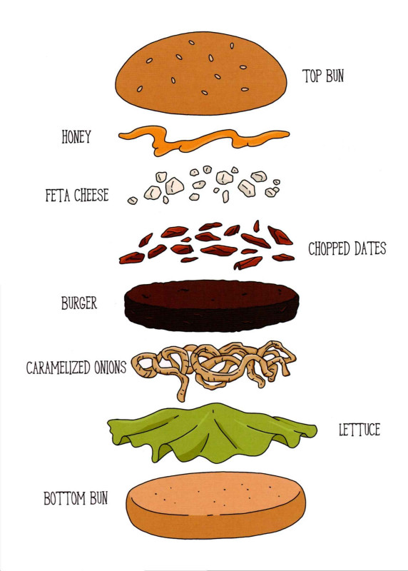

Shake Your Honeymaker Burger

Description
This sweet and savory burger is stuffed with thyme and marjoram, topped with
dates and honey, and finished off with a bit of sharp feta.
Hey, what do you call a piece of cheese wearing a tuxedo? One sharp looking feta.
Ha ha ha! You can have that one.
Ingredients
- 1 tablespoon butter
- 1 medium yellow onion, chopped
- 8 to 12 pitted dates
- 1 clove of garlic
- 1/4 cup of sherry vinegar
- 1/2 teaspoon dried thyme
- 1/2 teaspoon dried marjoram
- 1 pound ground beef
- 4 ounces feta cheese, crumbled
- 2 tablespoons local honey
- 4 buns
- Green leaf lettuce
- Cayenne pepper (optional)
Steps
-
Melt the butter in a wide frying pan over medium-low heat. Add the onion and stir to coat.
Cook over fairly low heat, stirring occasionally, until the onion is very soft and a deep,
sticky golden-brown, about 20 to 30 minutes.
-
Put the dates, the garlic, and the sherry vinegar into a food processor and pulse
until completely chopped. You could also use a mortar and pestle (if you're from a long time ago).
-
Mix the thyme and marjoram into your beef and form into 4 patties. Season with Salt
and pepper and cook as you normally would.
-
Heat up the honey in the microwave for about 30 seconds.
-
BUILD YOUR BURGER: Bottom bun, lettuce, caramelized onions,
burger, chopped dates and garlic, crumbled feta, a drizzle of warm honey (just a drizzle!),
and some cayenne, if you'd like. Shake your moneymaker while you eat your Shake Your Honeymaker.
Return to Recipes